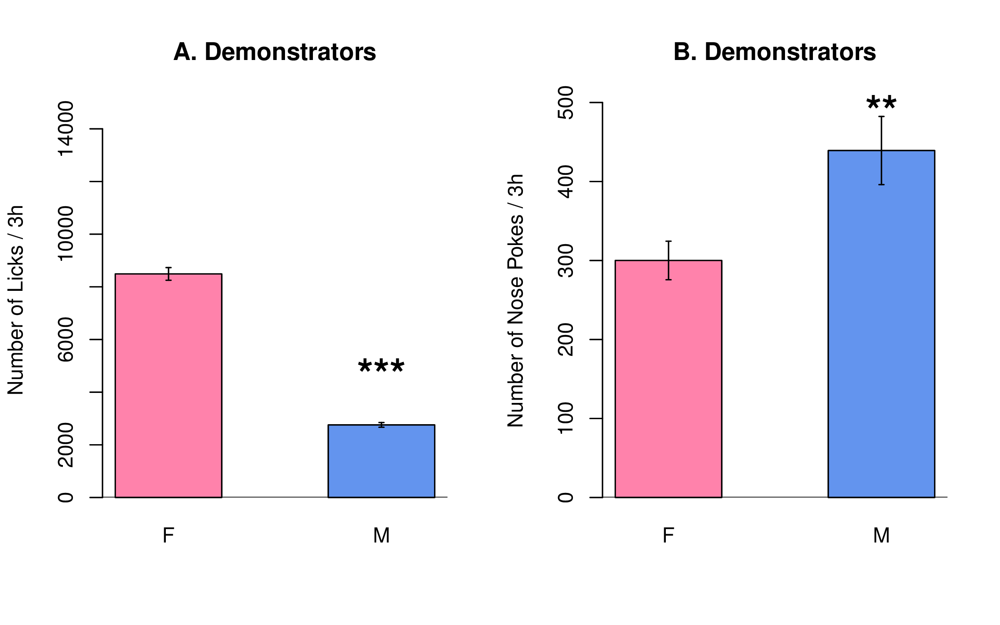

Research project 2: socially-acquired nicotine self-administration
Hao Chen
University of Tennessee Health Science Center
Rat GWAS retreat | University of Chicago | Sept 17 2014
Specific Aim 1. Breed adolescent HS rats at UTHSC
- We will use adolescent rats because this critical stage of brain development is particularly vulnerable to nicotine
- We will generate ~ 400 adolescent rats per year for four years.
- Breeders will be provided by Core B.
- Breeding starts when rats are in quarantine.
- A maximum of four rats will be used from each litter (2 ♂ + 2 ♀) in the behavior studies.
- One rat per litter will be used for RNA-seq (Aim 3). One brain will be used as backup.
- A fully independent breeding colony will not be maintained.
Specific Aim 2. Phenotype adolescent HS rats
Aim 2A. Social and emotional traits
| Age | Test |
|---|---|
| 21 | Wean |
| 31 | Open field: 1m x 1m x 0.5m (1 h) |
| 32 | Novelty: a cylindrical cage in the center (20 min) |
| 33 | Social interaction: a stranger rat in the cage (20 min) |
| 34 | Elevated plus maze (6 min) |
| 35-37 | Surgery and recovery |
| 38-49 | Nicotine SA |
| 50 | Cotinine assay |
| 51-54 | Extinction |
| 55-56 | Reinstatement |
Aim 2B. Socially-acquired nicotine self-administration

Pilot data: nicotine SA
Sex difference in demonstrator behavior
Pilot data: nose poke into the divider
Aim 2B. Proposed setup for self-administration
Aim 2B: Serum cotinine level

Pilot data: context reinstatement
Pilot data: context reinstatement
ISE vs NSE on reinstatement

Aim 2B: Proposed procedure for reinstatement


Aim 2C. Trait Relationships, PCA
Aim 2C. Trait Relationships, multiple regression
Aim 3. Laser capture microdissection
Previous work
WGCNA of accumbens shell transcriptome
LCM experiment design

- Rats from UTHSC, one rat per litter
- Collect 72 rats (36 ♂ + 36 ♀) on PND 56
- Finish in the first two years
- Genotyping will be done
- Each brain sliced into five collections
- Unstained sections provide better RNA quality
- Four brain regions: AcbC, LHb, IL, OFC
- Each region obtain 8-10 ng total RNA